A Gentle Introduction to Graph Neural Networks
原文是一篇博客形式的文章，该文章最大的特点：全篇没有公式，完全用可交互的图来对GNN进行说明。
0 图是什么
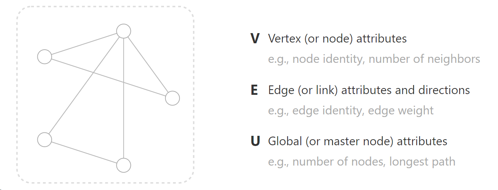
作者给出图的定义，一般是由顶点、边和全局组成。其中点就是点，边就是点之间的连线，全局又可以理解为全局点，这个全局点和所有点相连，也和所有边相连。这个全局点就是个虚拟点，设置它就是为了更好的掌握全局信息，进行全局的把握，进行信息的传递。
1 常见数据如何表示为图
图片和文字是日常生活中最常遇到的数据类型和格式，图能够广泛应用必须要解决这两个数据所带来的问题。本节作者讲述了如何将两种（图像和文本）看似与graph不相关的数据表示成我们熟悉的graph数据。
1.1 图片
在CNN中，我们利用PIL包的Image来处理图像数据。
读入彩色图的时候，读出的是一个二维矩阵，矩阵中每个元素（像素）有RGB三个值。因此，我们通常将图像视为具有图像通道的矩形网格，每个像素代表一个节点，并与周围的像素点相连（8个）。
不管你如何变化右边这个图，用鼠标拉拽，但是由于像素之间的连接性没发生变化，因此矩阵也不会发生变化。但是可以看到这个图相对来说集中在中间的线上，所以这样的邻接矩阵比较稀疏。假设图片是1080p的，你的邻接矩阵将是（1920×1080）**2，大约是4,299,816,960,000，10的12次方级别，非常的稀疏，非常的大。
1.2 文本
文本可以被认为是一个序列，其中每一个词作为一个节点，每一个词和其下一个词之前有一条有向边：
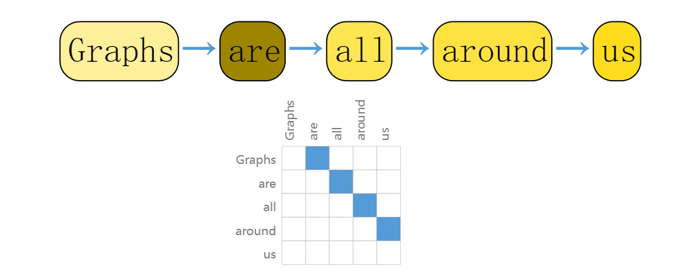
说白了还是稀疏，但是相对于图片来说好一点。
## 1.3 其他数据
1.3.1 分子
分子中原子通过作用力连在一起，因此每一个原子可以表示为一个点，原子间键表示为边。 如下图是一个香料分子：
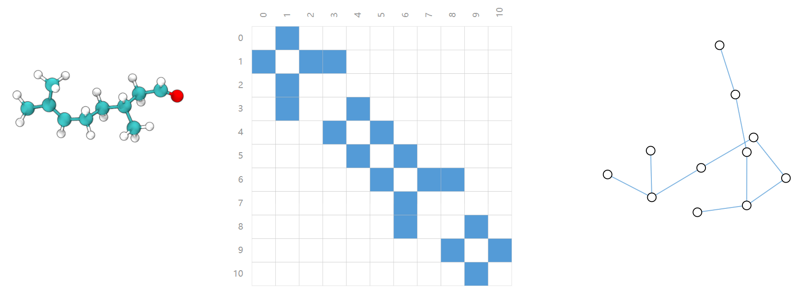
1.3.2 社交网络
社交网络除了graph外，我们很难再想出其他表示形式。在社交网络中，我们将个人表示为节点，将他们间的关系表示为边。
比如戏剧中人物关系图：
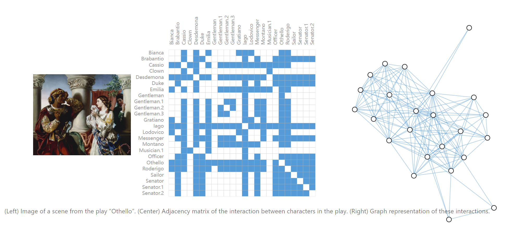
1.3.3 引文图
将论文抽象为节点，论文A引用了论文B，则有一条有向边A->B。该图是有向图。
2 图要处理的任务
图里面的任务主要分为三大类：图级、节点级和边级。在图级任务中，我们预测整个图的属性。对于节点级任务，我们预测图中每个节点的一些属性。对于边级任务，我们希望预测图中边的属性或者是否存在这条边。
2.1 图级别的任务
在图级任务中，我们的目标是预测整个图的属性。 比如对于某一分子，我们可能想要预测该分子的气味，或者它是否会和与疾病有关的受体结合。
这里的任务是输入一个图看是否有两个环，当然这也可以考普通的编程来解决。
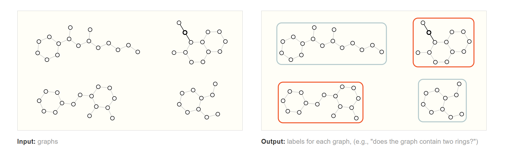
2.2 节点级别的任务
节点级预测问题的一个经典示例是空手道俱乐部数据集，该数据集是一个社交网络图，每个节点都具有一个唯一的label。如果教练和创始人分道扬镳，预测学员会跟谁。因此，节点预测的输入是一个图，输出是节点的标签：
2.3 边级别的任务
对于边级任务：给定一些节点，我们希望预测这些节点中的哪些共享一条边或该边的权值是什么。想要理解节点或者是主题之间的联系，比如图片理解之类的。
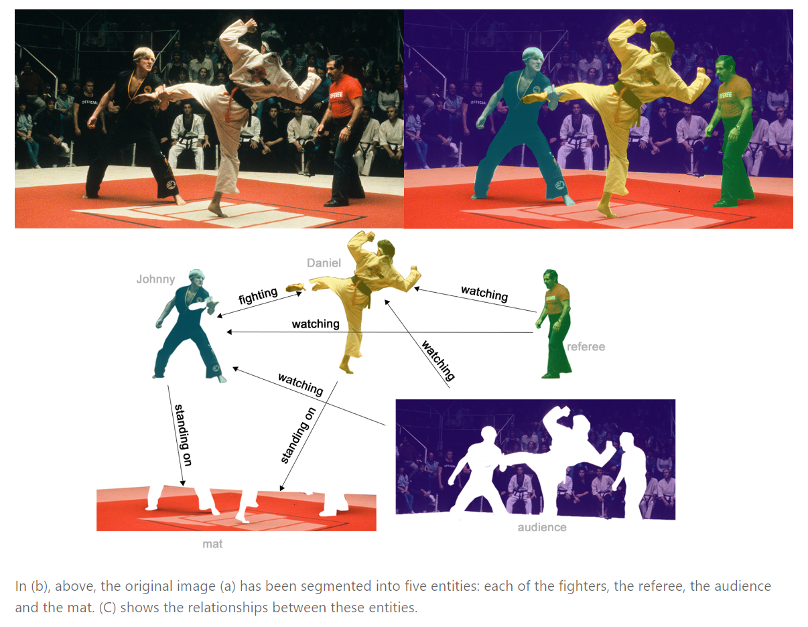
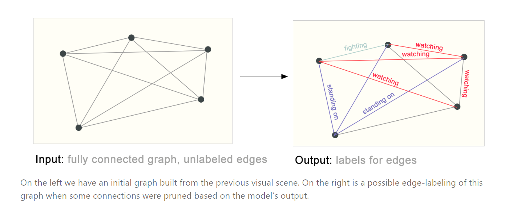
3 GNN（Graph Neural Networks）
3.1 使用图所面临的挑战
在使用神经网络对图进行处理前，我们得先将图表示成神经网络能够处理的数据类型。
图上的信息有四种：节点属性、边属性、全局属性以及连接性。
图表示的难点在于怎么来表示图的连接性。 最容易想到的就是邻接矩阵：相连为1否则为0。
不过，使用邻接矩阵来表示连接性的缺点是显而易见的：对于一些大型网络，其节点数可能上百万，并且每个节点的边数变化可能会很大，比如某些节点连接了几万条边，有些节点只连接了一条边，这样邻接矩阵将会非常稀疏，虽然我们可以利用压缩的办法来对这些稀疏矩阵进行存储，但稀疏矩阵的计算一直都是一个难题。
此外，还有一个问题：对于同一个图，我们将矩阵中任何行或列之间进行交换：
虽然两个邻接矩阵看起来不一样，但二者表示的却是同一个图。
也就是说，不同的邻接矩阵，可以表示相同的连接性！这意味着如果我设计了一个神经网络，在上述两个不同的矩阵输入后我得保证神经网络的输出是一样的。对于上面提到的两个问题，一个有效的解决方式是邻接表：
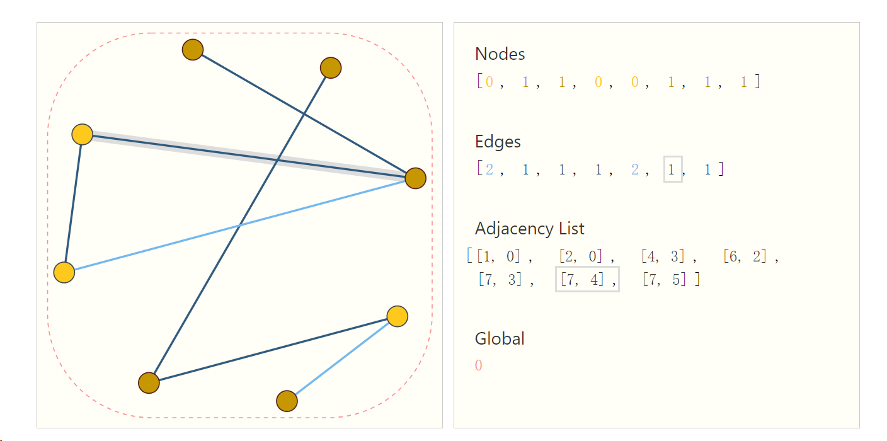
使用邻接列表来表示连接性的两个好处： 1. 对于稀疏矩阵来说，使用邻接列表存储显然更加节省空间。 2. 不存在两个不一样的邻接列表表示同一张图。
但同时邻接表的访问速度远低于邻接矩阵，不容易计算，输入gpu也是很大的问题。
3.2 最简单的GNN
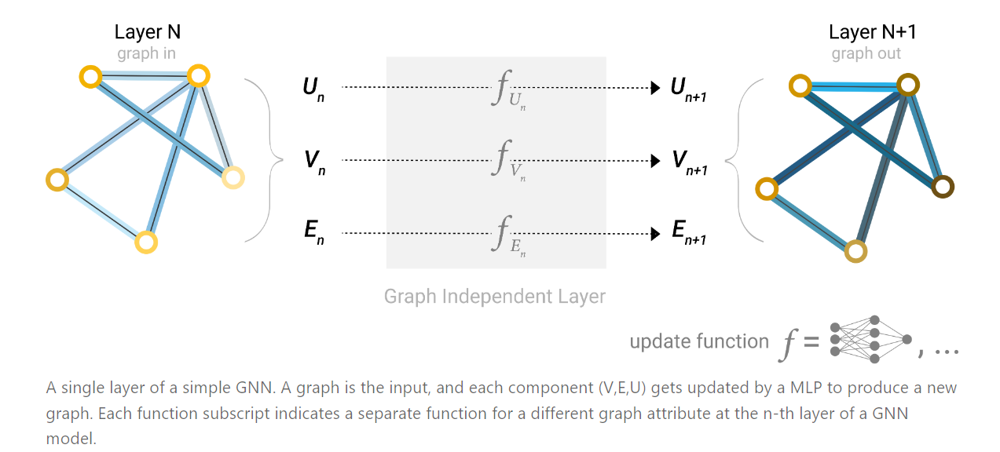
对于顶点状态向量、边状态向量还有全局的状态向量，我们分别构造一个输入大小等于输出大小的多层感知机。经过MLP后，我们就得到了更新后的状态向量。
三个MLP组成了GNN的一层，经过GNN的一层后，原图的节点、边以及全局的状态向量都被更新过，但整个图的结构并没有发生变化。
GNN可以像一般的神经网络那样将多层进行叠加，以求来对图的状态向量进行多次更新。并没有改变原始输入的连接性，只改变了点和边的值。
3.3 pooling
对于一个简单的二分类问题，比如上面3.2节提到的空手道俱乐部网络图，我们需要对每个节点进行分类，在我们得到每个节点的状态向量后，我们可以搭建一个输出为2的全连接层，然后再经过一个Softmax，就能进行二分类了。多分类问题类似，只要将全连接层的输出改为n即可。
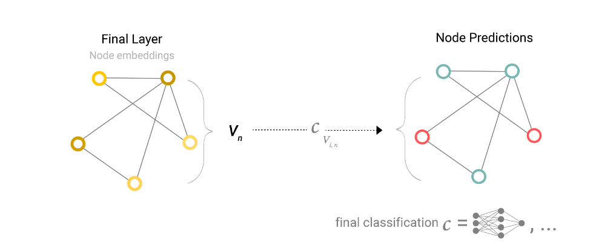
将经过最后一层后输出的节点状态向量与一个全连接层相连，就能进行分类任务了。
值得一提的是，这里所有节点都是共用一个全连接层，也就是所有节点共享同一个全连接层的参数。
以上是最简单的一种情况，但我们不得不考虑另外一种情况：如果我们没有一个节点的向量表示，但我们仍想对该节点进行预测该怎么办？ 答案是Pooling，Pooling在CNN中已经有过接触。
具体如下所示：

如果我们没有右上角那个节点的向量表示，此时我们就可以把与该节点相连的四条边的状态向量以及全局状态向量相加，得到这个节点的状态向量，然后再经过全连接层进行预测。sum类型的pooling。
类似地，如果没有某条边的状态向量，只有节点的状态向量，如下所示：
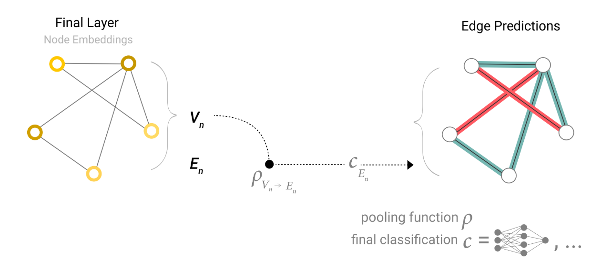
此时我们就可以把这条边上的两个节点的向量相加得到该边的向量，然后再进行预测。
又比如我们只有节点信息，没有全局信息，而我们想对图的全局标签进行预测：
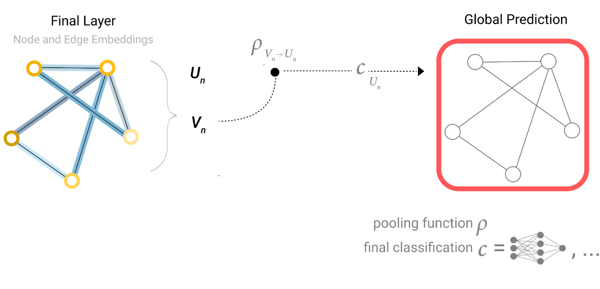
此时同样可以将图中所有顶点的向量加起来，得到一个全局表示，然后再进行预测。
因此，无论缺少哪一种信息，我们最终都能通过Pooling操作来汇聚已有的信息，进而得到我们想要的信息。
具体来讲，上面描述的GNN可以通过下图概括：
我们将原始graph通过一个个GNN层（每一层都有三个MLP，分别对三种状态进行转换），然后，无论是顶点、边还是全局，都通过同一个全连接层进行输出预测。
上述这种最简单的GNN存在着一个很明显的缺陷：我们在GNN层对节点或者边进行更新时，每层内所有节点共用一个MLP，所有边共用一个MLP，此时我们并没有考虑连接信息，也就是说我们在对节点更新时没有考虑与该节点相连的其余节点或者边，更新边时没有考虑与该边相连的节点。
简单来说，我们在更新时没有将图的结构信息考虑进去。
3.4 消息传递
我们在更新每一个节点的向量时，并不只是简单地将该节点的向量通过一个MLP后得到更新后的向量，而是还要考虑与该节点相连节点的向量。有的时候只考虑自己的邻居还不行，因为这样的话权重都是一样的。我们还得考虑边的大小，即边在此时就相当于是权重。
即更新点时考虑边，更新边时考虑点。
在进行边的更新时，我们可以将与该边相连的两个顶点的向量加入到该边的向量中（如果维度不同则需要变换），然后再对该边进行更新。同样，对于某一个节点的更新，我们也可以将与该节点相连的边的向量加入到该节点中，然后再对该节点进行更新。
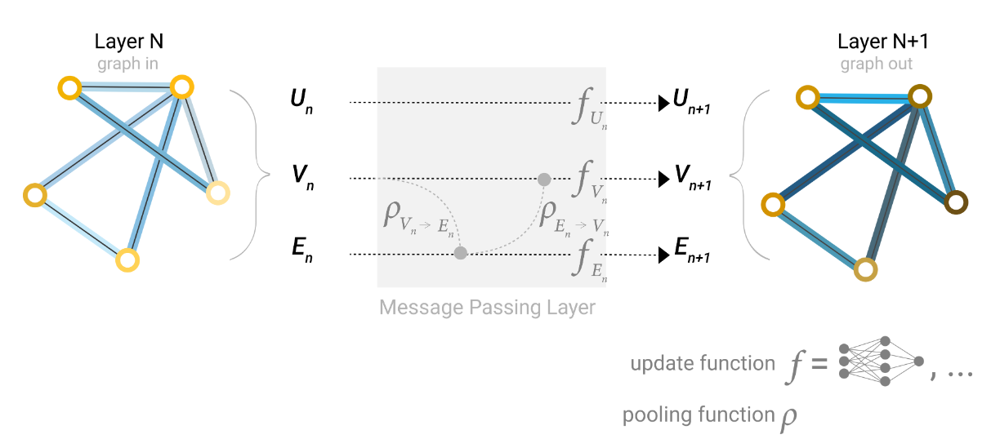
我们可以先把边的信息传递给顶点，顶点更新后，再将更新后的顶点信息传递给边，边再更新，或者相反，或者交叉传递。
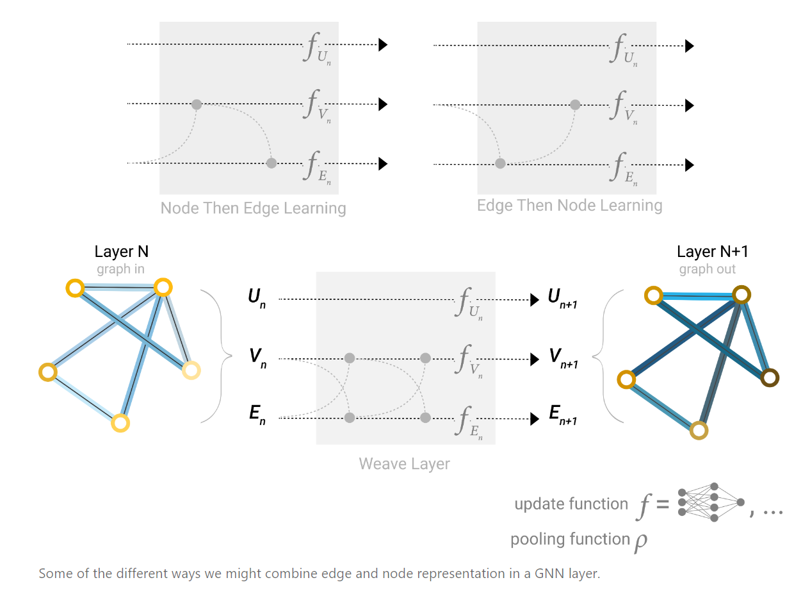
我们可以同时进行两种操作：将边的信息给节点，然后节点的信息也给边。此时的节点和边都包含了各自的信息，然后再进行一次传递，将二者的信息互相传递，随后再用两个MLP对节点和边进行更新。
3.5 全局表示
对一个large graph来讲，即使我们多次进行消息传递，图中相距较远的两个顶点间也可能无法有效地相互传输信息。
一种解决办法是加入master node（主节点）或者context vector（上下文向量）。主节点是一个虚拟的点，我们假设它与图中所有节点都相连，同时它也跟所有的边都相连。
因此在进行顶点或者边的更新时，如果我们加上全局表示 U ，就能保证所有顶点（边）间都能传递信息。
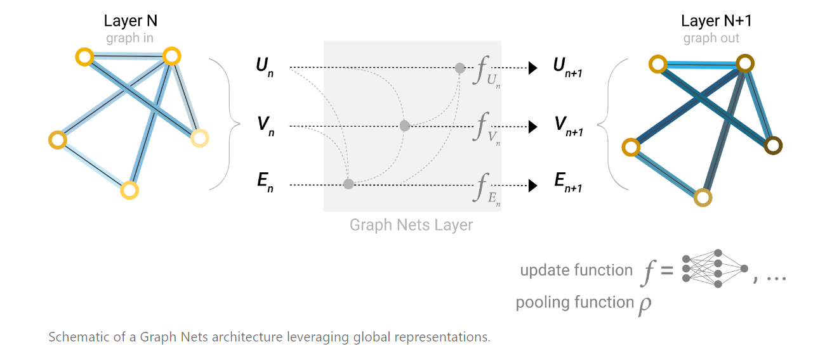
说白了就是虚构了一个超节点，这个超节点能捕捉全局的信息。
4 实验
作者在网页上展示了一个实验，可以调整各个超参数，来观察训练的结果。
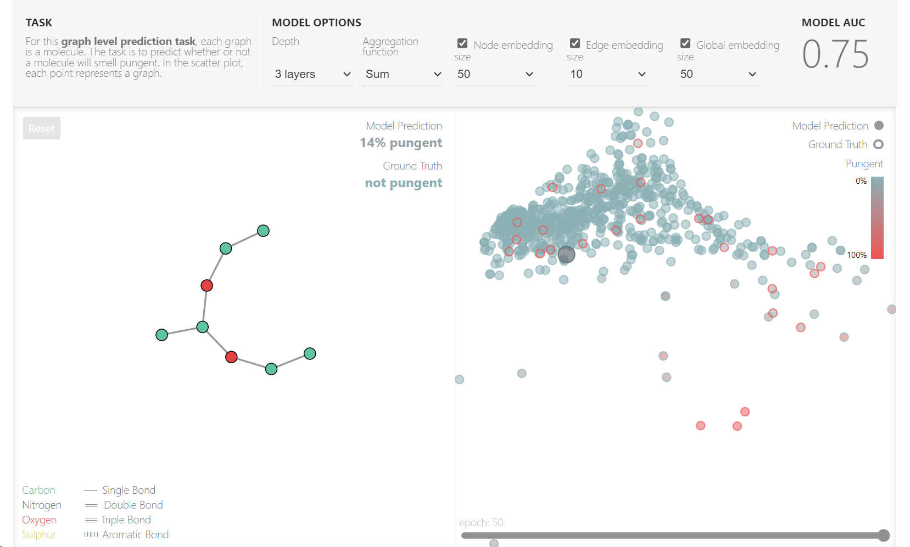
并且对比了各个超参数的影响，相当于做了消融实验。
一般来讲，层数越深，关联越多，准确率越高。至于embedding的向量长度和pool时的方法（max、sum、aver）都影响不大。
5 相关知识
5.1 其他图
这里主要介绍了两种其他类型的图：多重图和嵌套图。
所谓多重图，就是指图中一对节点间可以有多种不同类型的边。 比如在社交网络中，两个节点（用户）之间的边，可以表示这两人是熟人、家人或者情侣。这种情况下，GNN可以通过为不同类型的边设置不同类型的消息传递方式来进行调整。
所谓嵌套图，就是说图中的某一个节点可能就表示一个图。 比如在一个分子网络中，一个节点代表一个分子，如果一个分子能通过某种反应转换为另一个分子，则两个分子之间有一条边。在这个网络中，节点（分子）本身也是一个图（原子-原子）。在这种情况下，可以让GNN学习分子级别的表示和另一个反应网络级别的表示，并于训练期间在它们之间进行交替。
此外，还有超图，超图的一条边可以连接到多个节点，而不仅仅是两个。对于这种情况，可以通过识别节点社区并分配连接到社区中所有节点的超边来构建超图。
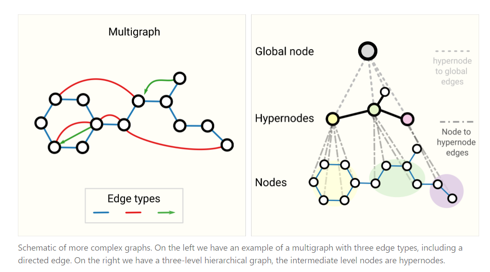
5.2 采样和批处理
GNN存在邻居爆炸的问题，即：GNN会不断地聚合图中相邻节点的信息，第L层GNN中的每个目标节点都需要聚合原图中L层以前的所有节点信息。邻点爆炸式增长，使得GNN的minibatch训练极具挑战性。
此外，由于彼此相邻的节点和边的数目不同，我们也不能使用恒定的批量大小。
解决该问题的办法是从图中进行采样，得到一个子图，然后对子图进行处理。
对一张图进行采样的四种方式如下图所示：
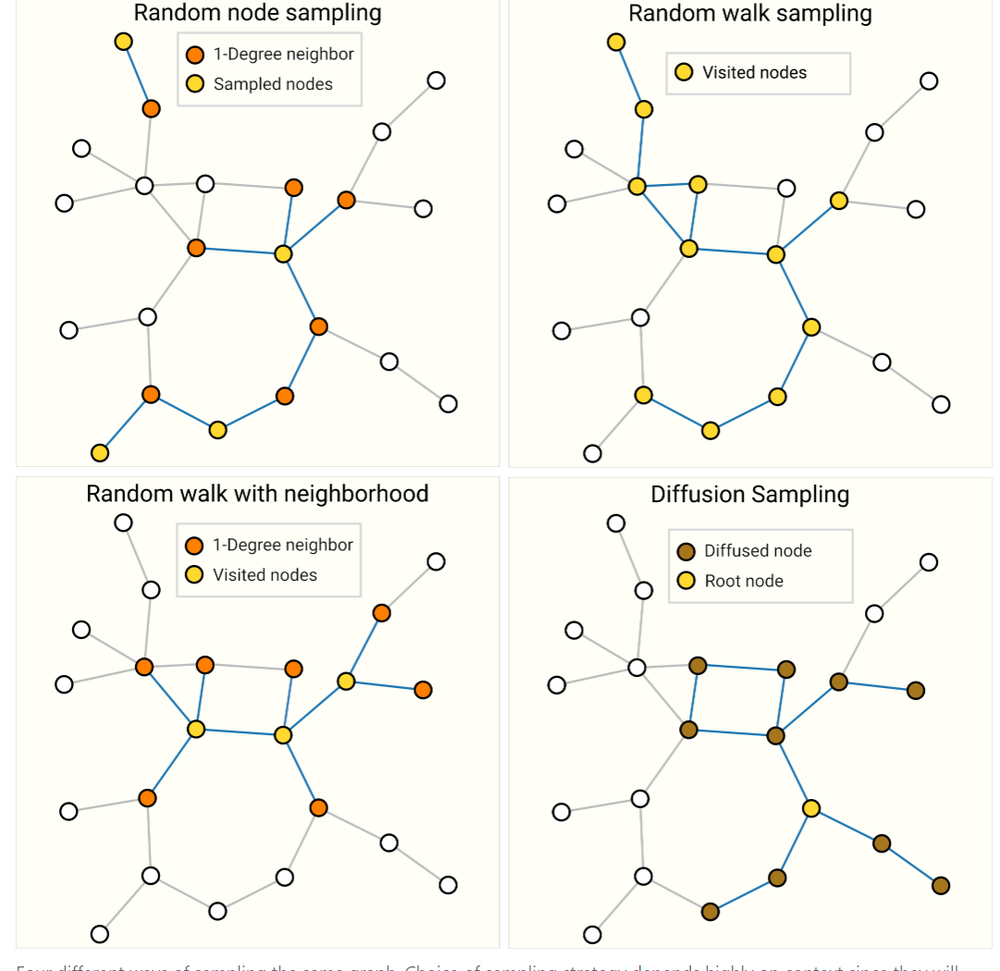
- Random node sampling：先随机采样一些点（Sampled nodes），然后再采样它们的邻居。
- Random walk sampling：做一些随机游走，从当前点的邻居节点中进行采样。
- Random walk with neighborhood：结合前两种：先随机走一定长度，然后再采样它们的邻居。
- Diffusion Sampling：取一个根节点，然后对它的一近邻、二近邻一直到K近邻进行采样，类似于一个BFS。
5.3 Inductive biases（感应偏差）
先说一说CNN的平移不变性：即使目标的外观发生了某种变化，但是利用CNN依然可以把它识别出来。即图像中的目标无论是被平移，被旋转，还是被缩放，都可以被成功地识别出来。
而在GNN中，也具有图对称性：也就是排列无关性，即使交换了顶点的顺序，GNN对其的作用都保持不变。
5.4 不同的pooling方式
在GNN中，对节点和边的信息进行Pooling是关键操作，选择一个最优的Pooling方式是一个比较好的研究方向。
常见的Pooling方式有max、mean和sum，作者对三者进行了比较：
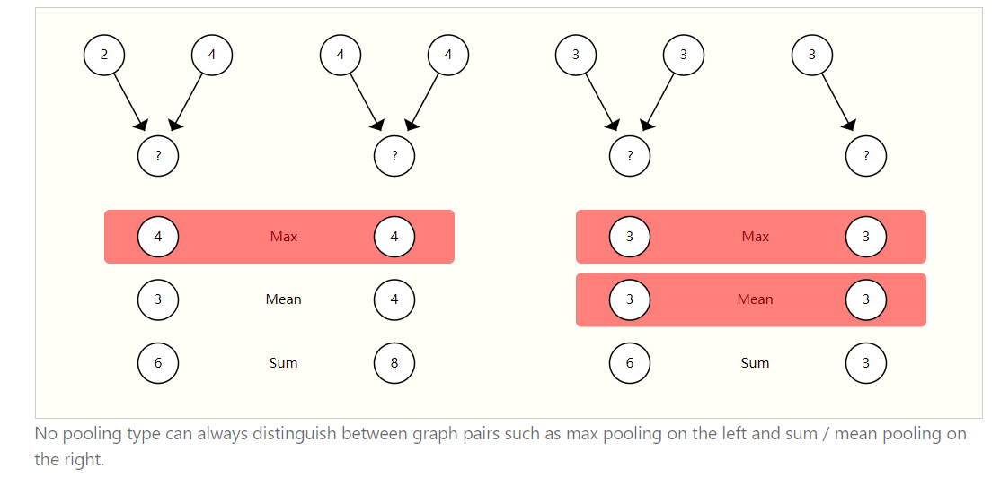
左边这幅图中，有2-4和4-4两个网络，如果我们采用max，二者结果都是4，没法进行区分，而mean和sum可以对二者进行区分；右边这幅图中，max和mean没法区分两种网络，而sum却可以。同样的，只要构造两个和相同的节点，但是节点各自的值不一样，那么sum也无法区分。
因此，没有一个Pooling方式是明显优于其它Pooling方式的。
小声：建议直接attention。
5.5 GCN 图卷积神经网络
如果GCN有k个层，每个层都是只看它的一个邻居的话，就等价于在卷积神经网络中有k个3*3的卷积。每个最后一个节点，他看到的就是一个子图，最远的顶点距离我当前的顶点距离是k。可以认为每个点都是以自己为中心的往前走k步子图的信息汇聚。一定程度上，gcn就是来处理n个这样的子图，每个子图都是往前走k步，求这个子图的embedding。
说实话不是很明白。
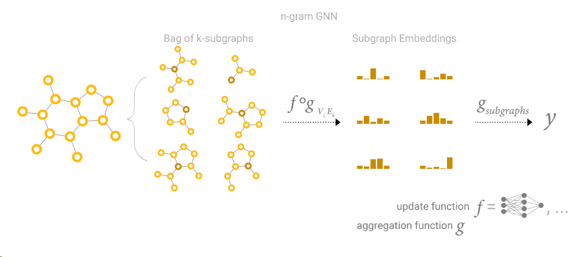
5.6 点和边可以做对偶
图论中点可以变成边，边也可以变成点，然后邻接关系保持不变。在GNN上同样适用。
5.7 图卷积是矩阵乘法，矩阵乘法是图上的行走
矩阵乘法就可以完成图卷积，但是矩阵在图这一块存储和计算一直是比较矛盾的。
5.8 Graph Attention Networks（图注意力机制）
之前做pooling的时候，一般是三种操作，求和平均和最大。为了更好的区分，在图上也可以做加权和，图对于位置是不敏感的。那么有一种做法就是用注意力的那种，你那个权重取决于两个点之间的关系。
5.9 图的可解释性
抓取一些子图，看看到底学了什么东西。
5.10 生成建模
虽然我们不想改变图的结构，即输入是一个图，输出也是一个图，且连接性不变。但是我们也想做生成图。
使用生成模型，我们可以通过从学习的分布中采样或通过完成给定起点的图来生成新的图。一个相关的应用是在新药的设计中，其中需要具有特定性质的新型分子图作为治疗疾病的候选者。
还提到了一些方法，但是都是一笔带过了，就是以后研究的方向了。